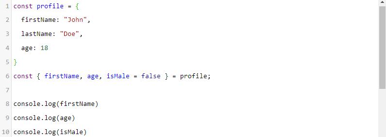

Kali ini kita akan berkenalan dengan tipe data object.
Sebuah tipe data yang sangat berguna dalam pengembangan aplikasi
dengan JavaScript. Object mampu menyimpan nilai dari beragam tipe
data dan membentuk data yang lebih kompleks.
Untuk menetapkan objek pada sebuah variabel kita gunakan tanda
kurung kurawal {}
Object berisi pasangan key dan value yang juga
dikenal dengan property. Key berperan mirip seperti nama
variabel yang menyimpan sebuah nilai. Sementara, value berisi nilai
dengan tipe data apa pun termasuk objek lain. Key dan value di dalam
object dituliskan seperti berikut:
Key harus berupa string dan dituliskan sebelum titik dua
(:), lalu diikuti dengan value-nya. Meskipun key merupakan
string, kita tidak oerlu menuliskan tanda petik kecuali ada karakter
khusus seperti spasi.
Tanda koma pada properti terakhir bersifat opsional. Namun, jika
tanda koma tersebut ditulis akan lebih memudahkan ketika kita ingin
memindah, mengubah, atau menghapus properti.
Satu object dapat memiliki beberapa pasang key-value yang dipisahkan
dengan tanda koma (,).
Dalam menuliskan objek, baris baru tidaklah penting dan tidak akan
berpengaruh apa pun. Sehingga tidak baik setiap kita menetapkan
key-value buatlah baris baru untuk memisahkan antar nilainya. Hal
ini akan memudahkan kita dalam membaca dan memahami struktur data
dari sebuah object
Kemudian untuk mengakses nilai dari properti object, kita dapat
memanggil nama object lalu tanda titik dan diikuti nama propertinya.
Contoh:
Selain dot operator, kita juga bisa mengakses properti dari object
menggunakan bracket atau tanda kurung siku.
Untuk mengakses key yang memiliki spasi atau karakter khusus lainnya
maka kita perlu menggunakan bracker seperti di atas.
Setelah mempelajari bagaimana membuat object dan menampilkan
property di dalamnya, selanjutnya kita akan memodifikasi sebuah
object. Untuk mengubah nilai properti di dalam object kita gunakan
assignment operator (=).
Tunggu dulu. Object spaceship dideklarasikan
sebagai const, tetapi kenapa kita bisa mengubah
nilainya?
Yang perlu diperhatikan adalah mengubah nilai berbeda dengan
menginisialisasi ulang nilai. Ketika membuat sebuah object, kita
tidak terikat dengan properti di dalamnya, sehingga kita masih bisa
memodifikasi nilainya. Berbeda jika kita menginisialisasi ulang
variabel dari object.
Ketika kita mengubah object menggunakan assignment operator dan
property/key-nya sudah ada, maka nilai di dalamnya akan tergantikan
dengan nilai yang baru. Sedangkan, jika propertu dengan nama key
yang ditentukan tidak ditemukan, maka property baru akan ditambahkan
ke object.
Kita juga dapat menghapus property pada object yang menggunakan
keyword delete seperti berikut:
Array
Array merupakan tipe data yang dapat mengelompokkan lebih dari satu
nilai dan menempatkannya dalam satu variabel. Contoh:
Perbedaan array dengan object adalah data pada array disusun secara
berurutan dan diakses menggunakan index. Untuk mengakses nilai di
dalam array, kita gunakan tanda kurung siku [] yang
di dalamnya berisi angka yang merupakan posisi nilai yang ingin
diakses.
Jika Anda mengira bahwa konsol akan menampilkan teks "Cokelat", maka
tebakan Anda kurang tepat. Dalam sebuah array, indeks dimulai dari
0, sehingga ketika kita mengakses data pada
myArray yang berada pada indeks ke-1 artinya data
tersebut merupakan data pada posisi ke-2. Jadi nilai yang akan
ditampilkan pada konsol adalah 42.5.
Lalu, apa yang akan terjadi jika kita berusaha mengakses index di
luar ukuran array-nya? Jika kita mengakses nilai array
lebih dari index-nya, maka hasilnya akan
underfined. Index terakhir array selalu jumlah
nilai array -1.
Sejauh ini kita baru belajar menginisialisasi dan mengakses elemen
dari sebuah array. Pastinya Anda bertanya, "Bagaimana kita
memanipulasi data pada array tersebut.?"
Nah, untuk menambahkan data ke dalam array, kita bisa menggunakan
metode push(). Fungsi push ini akan menambahkan
data di akhir array.
Sedangkan untuk mengeluarkan data atau elemen terakhir dari array,
kita bisa gunakan metode pop().
Metode lain yang bisa kita gunakan untuk memanipulasi data pada
array adalah shift() dan unshift(). Metode
shift() digunakan untuk mengeluarkan elemen pertama
dari array, sementara unshift() digunakan untuk
menambahkan elemen di awal array.
Lalu bagaimana jika kita ingin menghapus data dari array? Sama
seperti object, kita bisa menggunakan keyword delete.
Namun, perhatikan di sini bahwa keyworddelete hanya menghapus data pada index yang
ditentukan lalu membiarkan posisi tersebut kosong. Untuk menghapus
elemen, gunakan metode splice() seperti ini:
Selain untuk menghapus elemen pada array,
splice() juga dapat digunakan untuk menambahkan
elemen pada array tersebut. Caranya dengan memberikan argumen ke-3
(atau selanjutnya, bersifat
variadic) sebagai nilai yang akan dimasukan pada index yang diberikan pada
argumen pertama.
Spread Operator
Masih terkait dengan array, ES6 memiliki fitur menarik untuk
membantu pengelolaan array menjadi lebih mudah, yaitu
spread operator.
Sesuai namanya "spread", fitur ini digunakan untuk menyebarkan nilai
array atau lebih tepatnya iterable object menjadi beberapa
elemen. Spread operator dituliskan dengan tiga titik
(...). Mari kita lihat contoh kode berikut:
Pada kode tersebut hasil yang dicetak adalah sebuah array
(ditunjukkan dengan tanda
[])., karena memang kita mencetak nilai favorites
itu sendiri. Nah, dengan menggunakan spread operator kita dapat
menyebarkan nilai dalam array tersebut.
Terlihat perbedaannya? Mengapa bisa demikian? Spread operator
bekerja seperti meleburkan nilai array menjadi beberapa elemen
sesuai panjang nilai array-nya. Sehingga jika kita menuliskan kode
seperti ini:
Sama seperti kita menuliskan kode seperti ini:
Spread operator dapat digunakan untuk menggabungkan dua buah array
ke dalam array baru. Jika tidak menggunakan spread operator ini maka
hasilnya akan seperti ini:
Nilai array tidak tergabung. Alih-alih menggabungkan nilainya,
variabel allFavorites menjadi array baru yang menampung dua array di
dalamnya. Nah, lantas bagaimana jika kita mencoba menggunakan spread
operator?
Yup, dengan menggunakan spread operator nilai dua array tersebut
berhasil tergabung.
Selain array, spread operator juga bisa digunakna untuk object
literals. Hal ini memungkinkan kita dapat menggabungkan beberapa
object dengan kode yang lebih ringkas.
Destructuring Object & Array
Literasi object dan array adalah dua hal yang paling digunakan dalam
mengelola data di JavaScript. JSON (JavaScript Object Notation)
merupakan format data paling populer yang digunakan dalam transaksi
data saat ini.
Jika kita lihat pada struktur JSON di atas, kita dapat menyimpulkan
struktur tersebut dibangun dari array dan object. Karena kedua hal
ini banyak digunakan untuk mengelola data pada JavaScript untuk
memudahkan developer, ES6 menambahkan fitur untuk
destruturing object dan array.
Apa sebenarnya destructuring object dan array itu? Destructuring
dalam JavaScript merupakan sintaksis yang dapat mengeluarkan nilai
dari array atau properties dari sebuah object ke dalam satuan yang
lebih kecil.
Secara tidak sadar mungkin kita pernah melakukan destructuring.
Namun, sebelum ES6 hal tersebut dilakukan dengan cara seperti ini:
Perhatikan kode d atas, kode tersebut mengekstrasi nilai yang berada
di dalam objek, kemudian menyimpannya pada variabel lokal dengan
nama yang sama seperti properti di dalam object profile. Mungkin
mengekstrasi nilai dari object dengan langkah ini terlihat mudah,
tetapi bayangkan jika object memilikk banyak properti dan harus
melakukan hal tersebut secara manual satu persatu. Terlalu banyak
kode yang dituliskan berulang, bukan?
Itulah alasan ES6 menambahkan fitur yang memudahkan kita untuk
destructuring object dan array. Ketika kita ingin memecah struktur
data menjadi bagian-bagian yang lebih kecil, kita akan mempermudah
untuk mendapatkan data yang diinginkan.
Lantas bagaimana cara melakukan destructuring object dan array pada
ES6? Mari kita simak materi berikutnya.
Destructuring Object
Penulisan sintaksis destructuring object pada ES6 menggunakan object
literal ({}) di sisi kiri dari operator
assignment.
Pada contoh di atas tanda kurung kurawal mempresentasikan object
yang akan didestrukturisasi. Didalamnya terdapat
firstName, lastName, dan
age yang merupakan variabel untuk menyimpan nilai
properti dari object profile. Kita juga perlu perhatikan penamaan
variabelnya. Pastikan penamaannya sama seperti properti
object-nya. Melalui nama variabel inilah nilai-nilai
properti object akan dimasukkan secara otomatis. Sehingga variabel
firstName akan berisikan nilai
profile.firstName, lastName akan
berisikan nilai profile.lastName, begitu juga
dengan variabel age akan berisikan nlai
profile.age.
Dalam destructuring object, kita bisa menentukan salah satu nilai
yang ingin kita didestrukturisasikan. Sehingga kita perlu membuat
variabel sebanyak properti yang dimiliki objeknya, contohnya:
destruturing Assignment
Pada contoh sebelumnya, kita telah melakukan destructuring object
pada deklarasi variabel. Namun, pada kasus tertentu mungkin kita
perlu melakukannya pada variabel yang sudah dideklarasikan.
Pada saat melakukan destructuring assignment, kita perlu
menuliskan destructuring object didalam tanda kurung. Jika tidak
menuliskan tanda kurung, tanda kurung kurawal akan membuat
JavaScript mengira kita membuat block statement,
sementara block statement tidak bisa berada pada sisi
kiri assignment.
Nah, inilah fungsinya tanda kurung. Ia akan memberi tahu
JavaScript bahwa tanda kurawal di dalamnya bukan sebuah
block statement melainkan sebuah expression,
sehingga assignment dapat dilakukan.
Default Values
Ketika kita mendestruksikan objek dan menetapkan variabel dengan
nama yang bukan merupakan properti dari objek, maka nilai dari
variabel tersebut menjadi undefined. Contohnya:
Alternatifnya, kita bisa secara opsional mendefinisikan nilai
default pada properti tertentu jika tidak ditemukan. Untuk
melakukannya, tambahkan tanda assignment (=) setelah nama variabel
dan tentukan nilai default-nya seperti ini:

Jika nilai properti tidak ditemukan, maka nilai
default akan diterapkan pada variabel.
Assigning to Different Local Variable Names
Sampai saat ini kita tahu bahwa untuk melakukan destrukturisasi
object pada variabel lokal, kita perlu menyeragamkan penamaan
variabel lokal dengan object-nya. Namun, sebenarnya dalam
proses destrukturisasi object kita bisa menggunakan penamaan
variabel lokal yang berbeda. ES6 menyediakan sintaksis tambahan
yang membuat kita dapat melakukan hal tersebut. Penulisanya mirip
seperti ketika kita membuat properti beserta nilainya pada object.
Contohnya seperti ini:
Destructuring Array
Destructuring array serupa dengan destructuring object. Object
menggunakan tanda kurung kurawal {} sedangkan array
menggunakan tanda kurung siku []. Perbedaan lainnya
adalah destruturing array bekerja berdasarkan posisi daripada
penamaan propertinya. Berikut contoh dari destructuring array pada
ES6.
Kode di atas merupakan contoh proses destructuring array. Di dalam
array favorites terdapat 4 (empat) nilai string yang masing-masing
nilainya dimasukkan ke variabel lokal firstFood,
secondFood, thirdFood, dan
fourthFood. Nilai dari array yang dimasukkan ke
variabel lokal dipilih berdasarkan posisi di mana ia dideklarasikan
pada array.
Sebenarnya kita bebas untuk menentukan nama dari variabel lokal.
Yang terpenting adalah urutan ketika deklarasi variabelnya saja.
Kita juga bisa memilih nilai pada index tertentu untuk
destrukturisasi pada array. Contohnya, jika ingin mengambil nilai
ketiga dari array, kita tidak perlu menyipakan variabel lokal untuk
menampung nilai array pertama, kedua atau pun keempat. Kita bisa
melakukannya dengan membiarkan index array yang tidak kita inginkan
tetap kosong (tanpa menulis variabel lokal). Lebih lanjut, tanda
koma (,) tetap diperlukan untuk menunjukkan posisi index-nya seperti
ini:
Destructuring Assignment
Kita juga bisa melakukan destructuring assignment pada aray.
Namun, tidak seperti object, kita tidak perlu membungkusnya dengan
tanda kurung. Contohnya seperti berikut:
Array destructuring assignment sangat berguna ketika kita hendak
menukar nilai antara dua variabel. Sebelum ES6, untuk melakukan
hal ini kita menggunakan cara manula menggunakan algoritma seperti
ini:
Untuk melakukan pertukaran nilai, kita membutuhkan variabel
penengah. Pada contoh kode di atas menggunakan variabel
temp. Variabel penengah dibutuhkan untuk
menyimpan data sementara pada variabel yang akan ditukar. Hal ini
menjadi kurang efektif karena kita harus membuat variabel baru
yang sebenarnya hanya bersifat sementara.
Dengan array destructuring assignment, kita bisa menukar nilai
variabel dengan mudah tanpa membuat variabel tambahan.
Default Values
Ketika melakukan destructuring array, tetapu terdapat variabel
yang posisinya tidak dapat terjangkau oleh array, maka variabel
tersebut akan bernilai undefined. Contohnya:
Sama seperti object, pada destructuring array kita juga dapat
memberikan nilai default pada variabel yang tidak dapat terjangkau
oleh array, sehingga nilai pada variabel tidak akan menjadi
undefined.